Binary
Bubbles
Katakana
Latch
Metal Wall
Square Mosaic
Noise Copperplate Engraving

Noise Fabric
Emerald Grass
Noise Marble Vein
Noise Maze
Noise Wood
Additional color
schemes can be found in the org.jvnet.substance.colorschemepack
package. The screenshots below show the available color schemes.
|
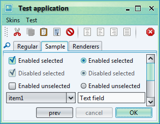
Belize (*) |
Bloody Moon (*) |
|
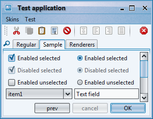
Blue Yonder (*) |
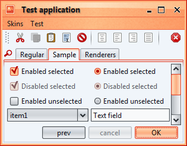
Brick Wall (*) |
|
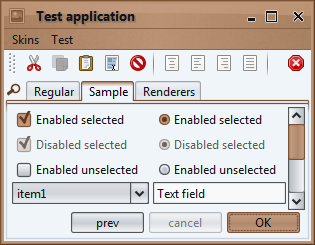
Brown Velvet |
Cobalt Steel (*) |
|
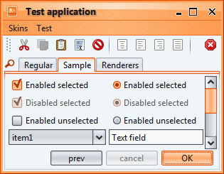
Desert Mars (*) |
Earth Fresco (*) |
|
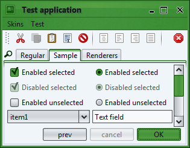
Emerald Grass |
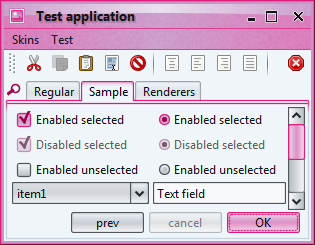
Fauve Mauve (*) |
|
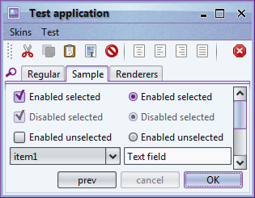
Gooseberry Jungle (*) |
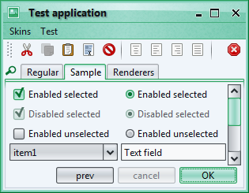
Green Pearl (*) |
|
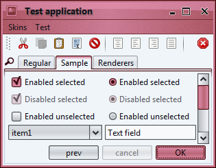
Mahogany |
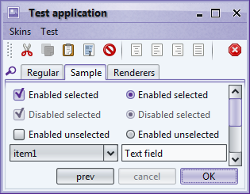
Orchid Alloy (*) |
|
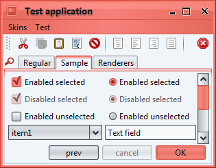
Peach |
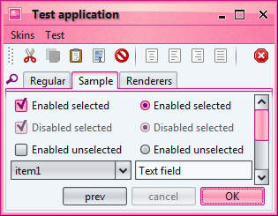
Placid Pink (*) |
|
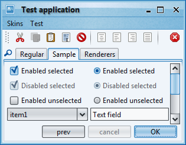
Sky High (*) |
Spring Leaf (*) |
|
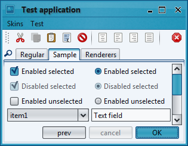
Turquoise Lake |
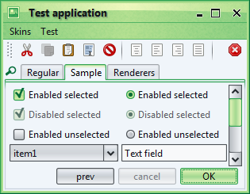
Wild Pine (*) |
|
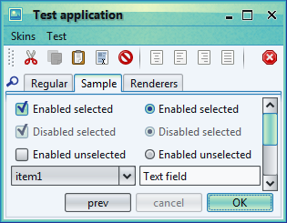
Yellow Marine (*) |
Additional watermarks
can be found in the org.jvnet.substance.watermarkpack
package. The screenshots below show the available watermarks.
|
Binary |
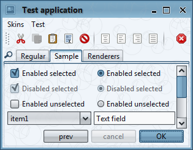
Bubbles |
|
Katakana |
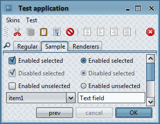
Latch |
|
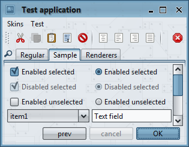
Metal Wall |
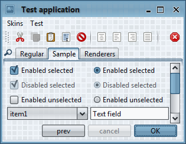
Square Mosaic |
|
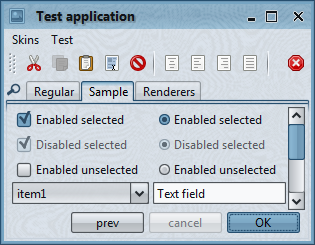
Noise Copperplate Engraving |
Noise Fabric |
|
Emerald Grass |
Noise Marble Vein |
|
Noise Maze |
Noise Wood |
Additional skins
can be found in the org.jvnet.substance.skinpack
package. The screenshots below show the available skins along with the way to use them.
Field of Wheat is available in the
org.jvnet.substance.skinpack.FieldOfWheatSkin.
In addition, the
org.jvnet.substance.skinpack.SubstanceFieldOfWheatLookAndFeel
can be used with one of the following options:
-Dswing.defaultlaf=org.jvnet.substance.skinpack.SubstanceFieldOfWheatLookAndFeelUIManager.setLookAndFeel(new SubstanceFieldOfWheatLookAndFeel())UIManager.setLookAndFeel("org.jvnet.substance.skinpack.SubstanceFieldOfWheatLookAndFeel");
 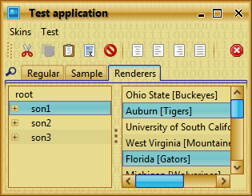
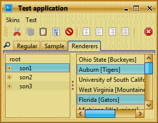
Finding Nemo is available in the
org.jvnet.substance.skinpack.FindingNemoSkin.
In addition, the
org.jvnet.substance.skinpack.SubstanceFindingNemoLookAndFeel
can be used with one of the following options:
-Dswing.defaultlaf=org.jvnet.substance.skinpack.SubstanceFindingNemoLookAndFeelUIManager.setLookAndFeel(new SubstanceFindingNemoLookAndFeel())UIManager.setLookAndFeel("org.jvnet.substance.skinpack.SubstanceFindingNemoLookAndFeel");
 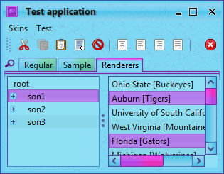
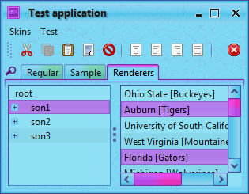
Green Magic is available in the
org.jvnet.substance.skinpack.GreenMagicSkin.
In addition, the
org.jvnet.substance.skinpack.SubstanceGreenMagicLookAndFeel
can be used with one of the following options:
-Dswing.defaultlaf=org.jvnet.substance.skinpack.SubstanceGreenMagicLookAndFeelUIManager.setLookAndFeel(new SubstanceGreenMagicLookAndFeel())UIManager.setLookAndFeel("org.jvnet.substance.skinpack.SubstanceGreenMagicLookAndFeel");
 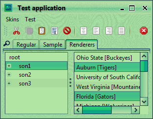
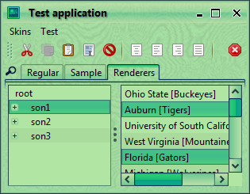
Mango is available in the
org.jvnet.substance.skinpack.MangoSkin.
In addition, the
org.jvnet.substance.skinpack.SubstanceMangoLookAndFeel
can be used with one of the following options:
-Dswing.defaultlaf=org.jvnet.substance.skinpack.SubstanceMangoLookAndFeelUIManager.setLookAndFeel(new SubstanceMangoLookAndFeel())UIManager.setLookAndFeel("org.jvnet.substance.skinpack.SubstanceMangoLookAndFeel");
 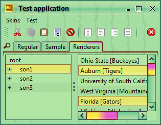
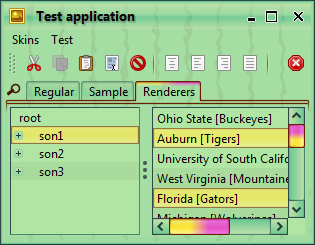
Streetlights is available in the
org.jvnet.substance.skinpack.StreetlightsSkin.
In addition, the
org.jvnet.substance.skinpack.SubstanceStreetlightsLookAndFeel
can be used with one of the following options:
-Dswing.defaultlaf=org.jvnet.substance.skinpack.SubstanceStreetlightsLookAndFeelUIManager.setLookAndFeel(new SubstanceStreetlightsLookAndFeel())UIManager.setLookAndFeel("org.jvnet.substance.skinpack.SubstanceStreetlightsLookAndFeel");
 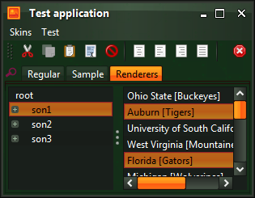
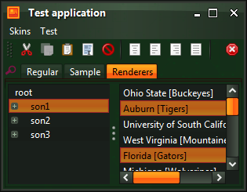
Additional button shapers
can be found in the org.jvnet.substance.shaperpack
package. The screenshot below shows the available button shapers.
The org.jvnet.substance.colorschemepack.MixColorScheme
provides support for creating a color scheme based on more than one base color schemes.
The org.jvnet.substance.painterpack.gradient.MixDelegateGradientPainter
allows wrapping an existing gradient painter to support mixed color schemes. Here is an example
of using a mixed color scheme and a mixed gradient painter in the Mango skin:
SubstanceColorScheme activeScheme = new MixColorScheme("Mango Active",
new SunGlareColorScheme(), new BarbyPinkColorScheme())
.saturate(0.2);
this.gradientPainter = new MixDelegateGradientPainter("Mixed Standard",
new StandardGradientPainter());
and the sample screenshot from the Mango skin (note the painting of scroll bar thumbs, checkmarks of radio buttons and checkboxes and the top part of the selected tab):